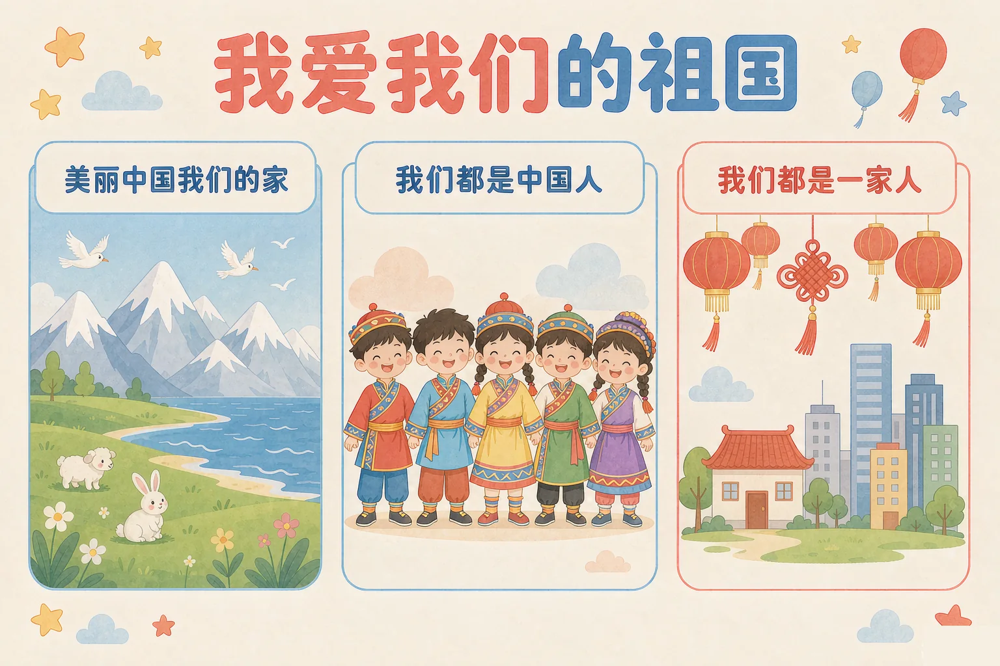
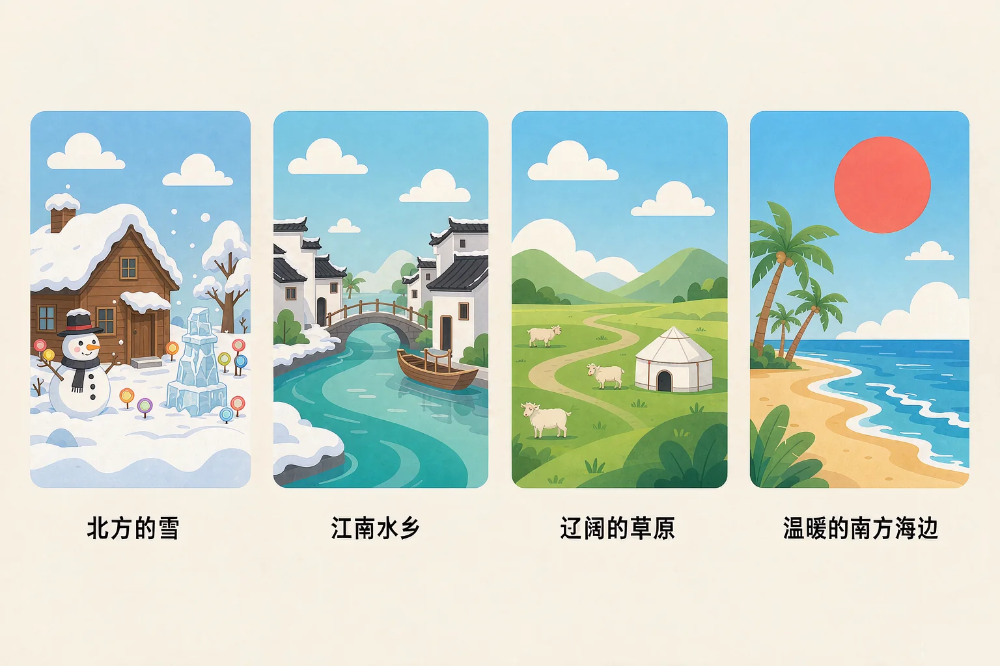
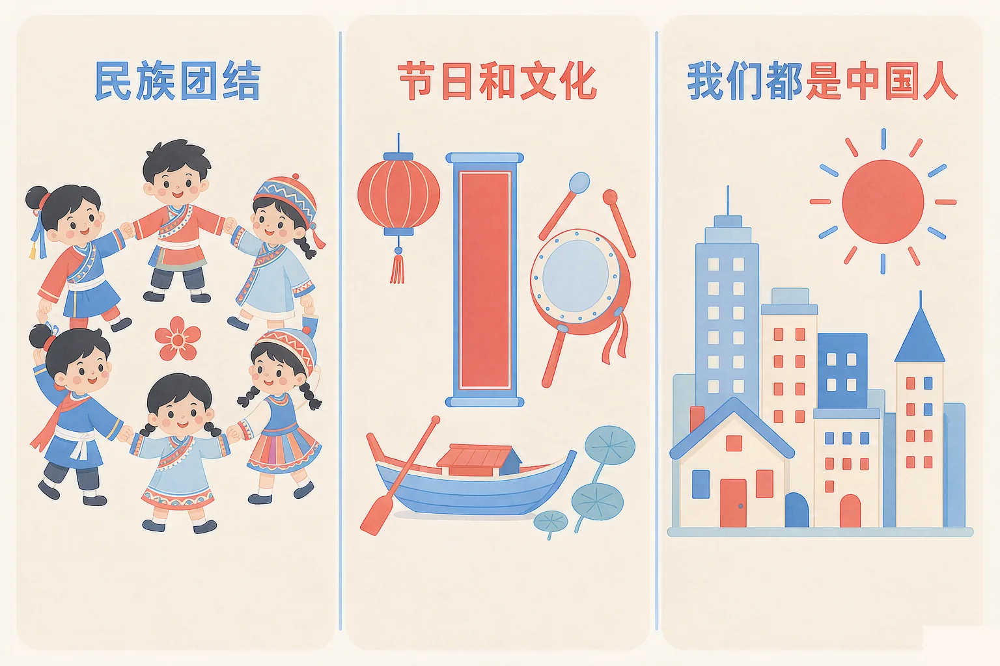

Gallery
v1.0.0 · skill v7.22.0
小学二年级 · 法治启蒙
我们的祖国有多大？她有哪些不一样的样子？

选一个你真正想知道的问题，后面的活动都会围着它转。
选择或输入后，这节课会围绕你的问题展开。
先凭直觉选一个，选完立刻看到解释——错了也没关系，正好知道要重点听哪里。
1. 同样是一月，祖国最北边和最南边可能是什么样子？
同样是一月，北边在下大雪，南边的海边还很暖和。祖国很大，各地样子差别很大。错因提醒：常见错误是误认为「全国天气都一样」——记住地图上从北到南有多远，就知道差别会有多大。
2. 我们国家有多少个民族？大家都是什么人？
我们国家有五十六个民族，穿的衣服、唱的歌、过节的方式不完全一样，但都是中国人，都是兄弟姐妹。错因提醒：容易误认为「不一样就不是一家人」——不一样的是风俗，一样的是一家人。
3. 升国旗的时候，下面哪个做法是对的？
国旗是五星红旗，国歌是《义勇军进行曲》。升国旗是很庄重的事，要肃立、行注目礼、认真唱国歌。错因提醒：有人误认为「操场上人那么多，我不站好也没人看见」——升旗是对国旗、对祖国的尊敬，跟有没有人看见没关系。
为什么要学这一课？
我们知道自己的家在哪条街、哪栋楼（And）；可祖国有多大、别的地方是什么样子，很多同学还没有真的见过（But）；今天先用图片和文字，把祖国各地走上一圈（Therefore）。
我们的祖国很大。从最北边到最南边，坐飞机也要飞上好几个小时。这么大的地方，每一个地方的样子都不一样。
北边和南边
最北边冬天很长，大雪能盖住房顶，人们滑冰、看冰灯；最南边的海边一年四季都暖和，长着高高的椰子树。
西边和东边
西边有一望无际的草原，牛羊成群；还有地势很高的高原，山上有终年不化的雪。东边河湖多，小河穿城而过，出门可以坐小船。

有的同学误认为「全国到处都是自己家这个样子」。其实同样是祖国，北边的雪、南边的海、西边的草原、东边的水乡，样子完全不同——这正是我们祖国好看的地方。
🔍 深层理解 换个角度再看一遍这件事，看看能不能说出背后的原理。
看见它：同样是一月，照片里这边的人裹着棉衣，那边的人还穿着短袖——不用讲道理，两张照片放在一起就把「祖国很大」说清楚了。
比较它：比一比：雪多的地方冬天长，水多的地方稻田多，草原多的地方牛羊多，海近的地方椰子多。地方不一样，长出来的东西、过的日子就不一样。
迁移它：以后看到别的地方的照片、吃到别的地方的饭菜，可以顺着想一想：那地方在哪里？大概什么气候？人们平时怎么过日子？
先在上面点一个地方的名字，再在下面点出它在说哪一段样子。配对了会告诉你为什么。
我们已经走过的地方
先在上面点一个地方的名字。
祖国各地样子不同，但我们有很多一样的东西：一样的节日，一样的文化，还有一个共同的名字——中国人。

有的同学误认为「只有自己家乡的过节方式才是对的」。其实各民族、各地方的节日和风俗不完全一样，它们都是祖国的宝贝，都值得看一看、学一学。
🔍 深层理解 换个角度再看一遍这件事，看看能不能说出背后的原理。
看见它：把「不一样」和「一样」并排放：衣服不一样、歌舞不一样、过节方式不一样；可是写的是同一种字，过的是共同的节日，认的是同一个祖国。
解释它：为什么对国家象征要那么庄重？因为国旗、国歌、国徽上写的是整个国家的名字，尊敬它们，就是尊敬共同生活在这片土地上的每一个人。
迁移它：这份庄重平时也能做出来：看到国旗升起来就站好，听到国歌响起就停下，遇到不同民族、不同地方的同学就多问一问、多听一听。
一共五道题。读题、选一个你认为正确的，选完就会有一段话告诉你为什么，或者还可以怎么想。做完一题点「下一题」。
读一读题目，选一个你认为正确的。
情境：星期一早上，操场上响起国歌，国旗正在升上去。这时候，站在队伍里的小明应该怎么做？请你陪他一步一步想清楚。
有的同学误认为「升旗的时候小声说两句话没关系」；也有的误认为「操场上人那么多，我不站好也没人看见」。国旗是五星红旗，国歌是《义勇军进行曲》，升旗是很庄重的事——做得好不好，跟有没有人看见没有关系。
说给同桌听：这四步里，哪一步你以前没做到过？下一次升旗，你打算先把哪一步做好？
先凭直觉选一个，选完立刻看到解释——错了也没关系，正好知道要重点听哪里。
1. 关于我们的祖国，下面哪个说法是正确的？
我们的祖国由很多地方组成：台湾是中国不可分割的一部分；中国香港和中国澳门是中国的特别行政区，都是中国的一部分。错因提醒：常见错误是误认为「祖国各地都一样」——北边的雪和南边的海，差别大着呢。另外，我国有五十六个民族，大家都是中国人。
2. 国歌响起的时候，班上有的同学还在说话。你会：
自己先做对，再轻轻提醒同学，是最好的办法。国歌是国家的象征，要认真对待。错因提醒：有人误认为「大家都在说，我说一句也没关系」——正好相反，多一个人做对，气氛就庄重一分。
3. 班上新来了一位同学，说话的家乡口音和大家不一样。你会：
口音不一样，是因为家乡不一样。五十六个民族、各个地方的人都是中国人，都是兄弟姐妹。错因提醒：容易把「不一样」误认为「不好」——不一样的地方，正是我们国家好看、好听的地方。
先写下你想对祖国说的一句话，再从下面四类里每一类挑一个，点一点，祖国名片就会一样一样长出来。
先把四类都选一选。
做完名片，再想一想：
名片上这四样，哪一样你最想讲给别人听？你打算怎么讲？先在下面写一两句，再说给同桌听。
先凭直觉选一个，选完立刻看到解释——错了也没关系，正好知道要重点听哪里。
1. 国歌响起时，你正在教室里收拾书包。下面哪个做法是对的？
国歌是《义勇军进行曲》，是国家的象征。一听到就要停下、站好、认真唱——这一停，就是尊敬。错因提醒：常见错误是误认为「边做别的事边听也算听到了」——国歌要认真对待，手上不该有别的事。
2. 班上来了一位说话口音和大家不一样的新同学。你会：
口音是家乡给的。我们国家有五十六个民族、很多个地方，大家都是中国人，要团结友爱。错因提醒：有人误认为「口音不一样就不好相处」——正好相反，多听一听，你会知道更多有趣的事。
3. 有人问你：「祖国那么大，我们要不要知道别的地方的样子？」你的回答是：
知道得越多，越会明白祖国有多大、有多好看。北边的雪、南边的海、西边的草原、东边的水乡，都是我们的家。错因提醒：容易误认为「别的地方和我没关系」——我们同住在一片土地上，别的地方也是祖国的一部分。
回到开头那个问题：我们的祖国有多大？大到同一个时间里，北边在下雪、南边在海边玩水；大到有五十六个民族一起住在这里。知道她有多大、有多好看，就会从心里说一句：我爱我们的祖国。
给别人讲一遍：请用「祖国、各地、国旗」这三个词，说清楚你今天最想告诉别人的一件事，说给同桌听。
三层练习，做完第一、二层就算通关；第三层留给愿意继续探索的同学。
⭐ 基础巩固（必做）
⭐⭐ 能力应用（必做）
⭐⭐⭐ 迁移挑战（选做）
左边是学它之前要先会的，右边是学会之后可以继续探索的，下面是同一领域的伙伴知识。
图谱正在加载：首次进入需下载知识索引（约 1–3 秒），加载完成后本行会自动消失。